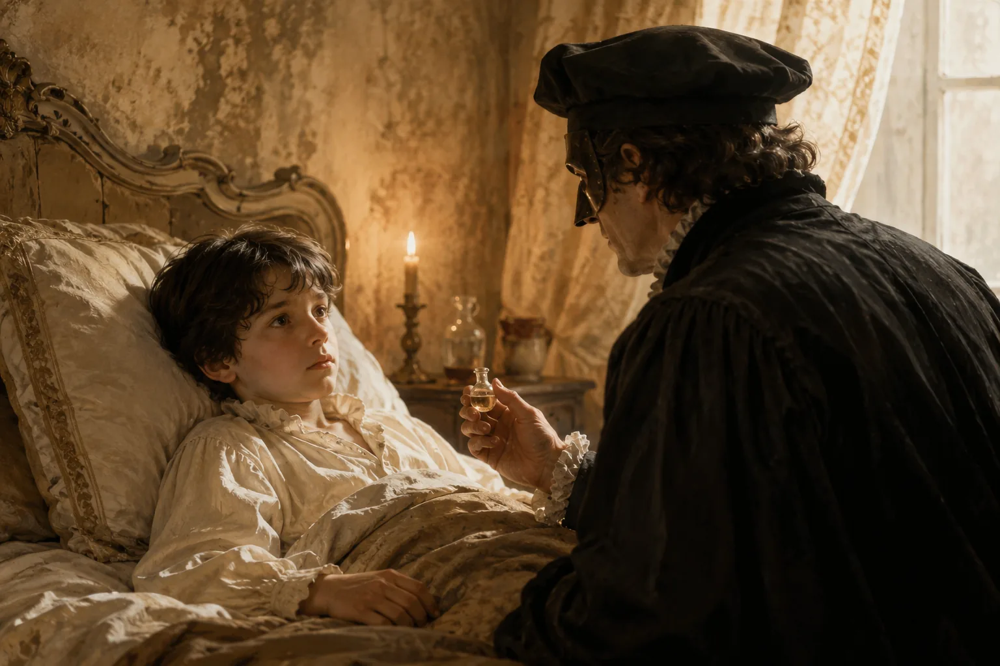
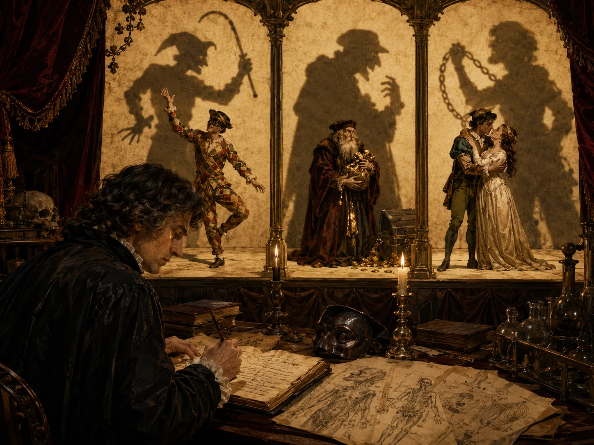
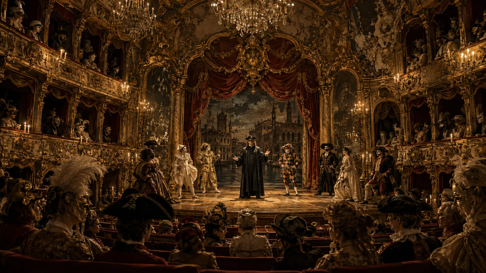
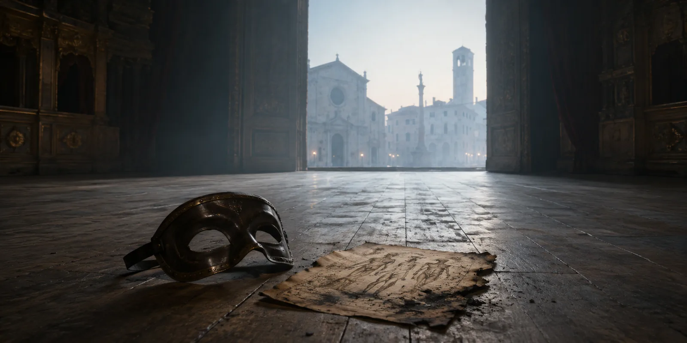

即兴喜剧，和所有戏剧一样，要求我们戴上面具：抛下自己的身份，走进另一个灵魂。
对我而言，不止是"医生"（Il Dottore）那只皮质半面具，不止是学者的黑帽与学袍，不止是博洛尼亚那位冒牌医师被夸张到畸形的形象——这些当然都是戏的一部分——还有一层更原始、更古老的面具：它盘踞已久，缝进我脸上的皱纹与血肉的纹理，缝进我存在的组织。那是一只用谬误教义和掘出的先人骸骨做成的面具，而我是一个用两条腿走路的、戏剧化的"确定"本身，满脚注，满嘴流出来的死理论，我的嗓音就是赝品智慧的烙印。我走进每一座广场，都像一个伪诊断的贩子，人们大笑，人们相信，人们把自己的恐惧倒进我的表演里。
这就是即兴喜剧。
那年冬天，我的戏班来到一座瘟疫肆虐的小镇，空气里满是给死者的熏香、腐味，和疾病那铜甜的呼吸。广场——曾经满是拉齐闹剧、油彩、尖叫、铃鼓和醉笑的地方——如今充满咳嗽和无人应答的低声祷告，一群裹着毯子与恐惧、眼睛空洞的会众。可我们照演，因为演出是我们的生计，而沉默可能是我们的灭绝。我们照演，因为即兴喜剧不靠面包、酒、空气或铜币活下去——它靠宣泄活着：靠笑声，靠释放，靠人群心魂的热量。
他们把一个男孩带到我面前，烧得发亮，皮肤透出一种令人作呕的透明，脸上染着的东西像极了我们在台上用的假血。我跪下，像过去一千次那样跪下，在这台神圣的无聊机器里扮演我的角色。我开了鸽子血、月尘、土星的几何和星象的排布；我背诵盖伦、亚里士多德、帕拉塞尔苏斯；神圣、辉煌、动听的呓语，我的声音丰润、高涨、满是戏剧腔——
然后他看了我一眼。
不是观众看小丑的那种眼神，不是信众看神父的那种，也不是傻子看江湖郎中的那种。而是病人看一个也许能救他、也许会辜负他的存在的眼神，是凡人看一位高出他整个维度的神明的眼神。
那目光清晰得赤裸、剥尽了表演、真诚得近乎暴烈，穿过我的修辞，像刀锋穿过布匹，我体内某种古老而寄生的东西裂开了，仿佛我颅骨里一间封死的暗室裂了缝，空气第一次涌进我的存在。

那一夜我没有排练独白，没有打磨拉丁文，没有对着裂纹的镜子过台词，没有诵念我这身行头的神圣废话。我坐在一间屋里，只有一支将尽的蜡烛和油彩的余绿光，一个问题升上来——不是修辞的，也不是装饰性的：
血，是做什么用的？
病已经开始；它像糖浆里的腐烂一样渗开。像潮气渗进石头。
好奇取代了咒诵。观察取代了权威。沉默取代了表演。
我开始看，而不是宣告；开始听，而不是背诵；开始看见，而不是叙述。我听阿尔莱基诺的拉齐，看见那套粗粝的编舞——一套把人的残酷伪装成喜剧的仪式几何，一种借走位和面具把疼痛炼成笑声的法术。我研究潘塔洛内发抖的双手，看见的不是贪婪，而是匮乏的病理，是被刻进骨头的对贫穷的恐惧。我听恋人们（Innamorati）的十四行诗，忽然满纸都是占有，他们的抒情烂成了嫉妒，他们对彼此的深情变成一种柔软的、喷了香水的暴力。我的独白不经我同意就变了，从语言的盾牌变成低声的验尸，从炫技变成真话。

戏班在我说出名字之前就感觉到了。
阿尔莱基诺的把戏锋利成了恶意。
布里盖拉的狡黠硬化成了真正的算计。
潘塔洛内锁上了他的箱子，和他的门。
科隆比娜用那种安静而致命的聪明看着我——那聪明，永远属于比剧本更懂舞台的人。
而世界本身开始碎裂。
画出来的太阳拒绝落山。
一扇活板门打开，通向黑色的无限。
一扇舞台门后不是花园，是虚空。
布景剥落，露出的不是木头，是"无"。
闹剧正在被揭穿。
梦把真相告诉了我：我们不是在表演，我们是造物；不是演员，是心魂的引擎，靠观众的宣泄喂养——他们的笑声、恐惧、悲伤、释放；真实对即兴喜剧是毒药，好奇是癌，真相是灭绝。
但病，早已越过了可以治愈的界线。
《愚人大闹剧》之夜，威尼斯披金戴绒。枝形吊灯像被捕获的太阳一样燃烧，光在绸缎上流转，呼吸里全是压不住的香水与颓靡。面具们闪着亮片与神秘。贵族们微微发亮，像一地宝石甲虫。乐队嗡嗡作响，仿佛一场亘古的演出，正向声音的虚无让步，一巢心不在焉的闲谈。
剧场满得溢出来：告解、罪、嘉年华、圣事、假面、献祭，全部绞成同一场歌剧式的谵妄。
我踏上舞台，感到唱本在头脑里张开，像一道熟悉的伤口。
而我没有跟着它走。

该插科打诨的地方，我说出了绝望。
该闹剧的地方，我说出了心碎。
该表演的地方，我说出了抑郁。
该戴面具的地方，我说出了意义在一个活着的身体里缓慢的窒息。
笑声没有来。
寂静落下，厚如天鹅绒，重如灰。
其他角色僵住了，脚踝慢慢锁死，膝盖僵直，背脊变硬；他们的台词流失了感情，他们的面具凹陷成死物，而我感到即兴喜剧的进食机制在打摆、在挨饿、在坍塌。潘塔洛内的金子成了灰。阿尔莱基诺的拍板成了铅。布里盖拉的阴谋散成了胡话。恋人们的诗溶成了噪声。吊灯暗了。天鹅绒黑了。镜子裂了。剧场在我眼前开始腐烂：油漆剥落，木头开裂，幕布朽成丝缕，包厢像折断的翅膀一样垂下来。
幻觉的歌剧，坍缩成安魂曲。
我在一具为沉睡设计的身体里醒着，在一副为表演打造的躯壳里有意识，在一个只装得下闹剧的形骸里捧着无限——我开始写：一份诊断，一篇论文，一场对我自身状况的验尸——可语言本身正在我手下瓦解，句法坍塌，语法碎裂，字母在我手底变成灰，仿佛现实本身在拒绝连贯。
金子熔了。
天鹅绒烧了。
面具烂了。
舞台陷了。
剧本流墨，如伤口。
音乐衰成振动。
光衰成影。
建筑塌成概念。
剧场溶成哲学。
而我，仍有意识，仍知晓，仍在那坍塌的结构里思考，在世界于它周围散架之际写下最后一行，当吊灯轰然砸落、玻璃与火四溅、假面舞会在自己辉煌的废墟里溺毙之际——
即兴喜剧没有落幕。
病是绝症。
即兴喜剧没有落幕。
病人是解药。
即兴喜剧没有落幕。
解药是灭绝。
即兴喜剧没有落幕。
它分解了。
当最后一道幕烧着落下，没有掌声，没有观众，没有舞台，只剩一缕悬在幻觉残骸中的意识，一个没有世界的心智，一个没有嘴的声音，一个没有形骸的知晓——它终于明白：真相终将杀死这场戏；而一副面具所能染上的最致命的疾病，不是瘟疫，不是火，不是疯狂，不是寂静，也不是时间本身——
——而是那最缓慢的漂移，是不可避免的白天来临之前，梦最鲜亮的最后几分钟。
